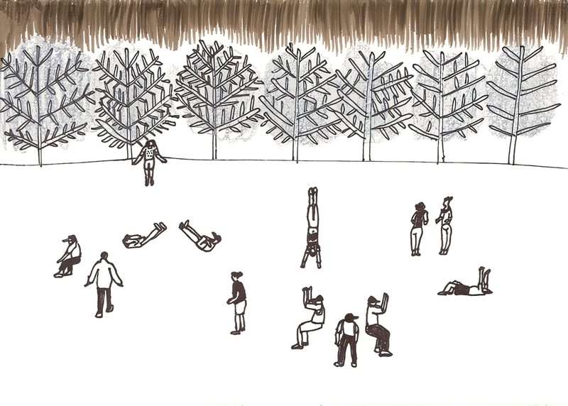
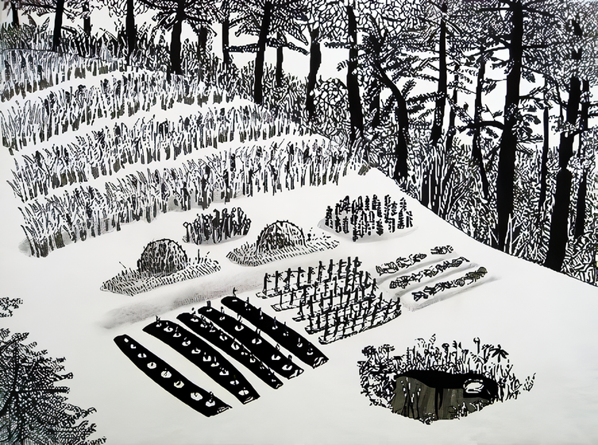
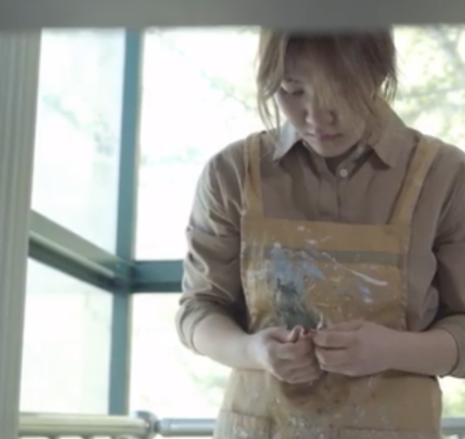

브리프 케이스(Brief Case)
엄유정 드로잉展
2009_0304 ▶ 2009_0328
보충대리공간 스톤앤워터
supplement space STONE & WATER
경기도 안양시 만안구 석수2동 286-15번지 2층
Tel. +82.31.472.2886
www.stonenwater.org
엄유정은 회화, 드로잉 등의 장르를 다루며 인체, 식물, 풍경 등 주변의 여러 대상을 소재로 친근하고 유머러스하거나 정감 있는 화면을 만들어내고 있다. 단순하면서고 시원한 필체는 보는 이로 하여금 독특한 회화의 묘미를 전달하였다. 즉 익숙한 듯한 장면이지만 색다른 표현으로 가득차 있다. 또한 단순한 이미지이지만 풍부한 감정을 전달하는 엄유정 특유의 필체를 느끼게 한다.
 
그럴싸한 그림을 그리기보다는 내 자신에게 좀 더 솔직하게 나타내고 싶다. 일단은 거기서부터 시작해야 진심이 담길 수 있다고 본다. 그리고 그것이 담기면, 언젠가는 누군가에게 작은 알맹이로 다시 전해질 수 있겠지.
■ 엄유정
